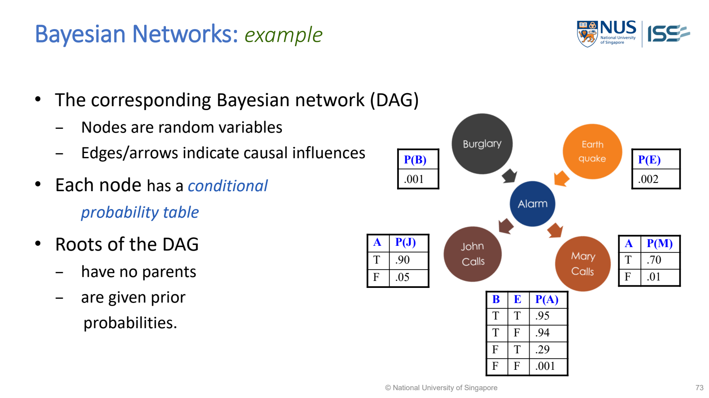

MR-35 Bayesian Networks（貝氏網路）
BN (Bayesian Network) = DAG (Directed Acyclic Graph；有向無環圖) + CPTs (Conditional Probability Tables；條件機率表). It represents several uncertain variables, their dependencies, and the probabilities needed to answer queries from evidence.

MR-Day 2_JR_v1.pdf · PDF p.72 / printed slide 73.
What to draw / write
Burglary (B) ─→ Alarm (A) ←─ Earthquake (E)
├─→ JohnCalls (J)
└─→ MaryCalls (M)| Part | Meaning | Here |
|---|---|---|
| Node | Random variable with possible values/states. | B, E, A, J, M are true/false variables. |
| Directed edge | Specifies a direct dependency in the model. | A has parents B and E. |
| Acyclic | No directed path loops back to its starting node. | No A → … → A cycle. |
| Root prior | Probability for a node with no parents. | P(B)=0.001; P(E)=0.002. |
| CPT | Node probabilities for each combination of parent values. | Alarm needs rows for all four B/E combinations. |
The lecture interprets these example arrows as causal influences. In a proposed model, do not claim an arrow proves causation merely because you drew it.
Read and complete the lecture’s CPTs
| B | E | P(A=true | B,E) | P(A=false | B,E) |
|---|---|---|---|
| T | T | 0.95 | 0.05 |
| T | F | 0.94 | 0.06 |
| F | T | 0.29 | 0.71 |
| F | F | 0.001 | 0.999 |
The false column is calculated as 1 minus the true column. Each row describes one fixed parent combination and must sum to 1 across the node’s possible values.
| A | P(J=true | A) | P(M=true | A) |
|---|---|---|
| T | 0.90 | 0.70 |
| F | 0.05 | 0.01 |
J and M have separate tables. They are not two mutually exclusive outcomes in one distribution: the entries across J and M do not have to sum to 1.
Joint probability: multiply one factor for EVERY node
- B, E
- Burglary and Earthquake.
- A
- Alarm.
- J, M
- JohnCalls and MaryCalls.
- ¬
- NOT / false, e.g. ¬B means no burglary.
Lecture event: John and Mary call; alarm is on; no burglary or earthquake.
Use the row matching the stated parent values. A missing/unknown variable is summed over; it is not automatically false.
Lecture query: burglary GIVEN John calls
- Query
- B: we want the probability of burglary.
- Evidence
- J=true: John calls. No observation of E, A or M is supplied.
- P(B)
- Prior burglary probability, 0.001.
- P(J|B)
- John-call likelihood if there was a burglary, calculated through the hidden Alarm/Earthquake branches.
- P(J|¬B)
- John-call likelihood if there was no burglary.
- P(A|B)=0.95×0.002+0.94×0.998=0.94002.
- P(J|B)=0.90×0.94002+0.05×0.05998=0.849017.
- P(A|¬B)=0.29×0.002+0.001×0.998=0.001578.
- P(J|¬B)=0.90×0.001578+0.05×0.998422=0.0513413.
- P(B|J)=(0.849017×0.001) / [(0.849017×0.001)+(0.0513413×0.999)] ≈ 0.01628 = 1.63%.
Why low? Burglary is rare; John can call even without an alarm. Do not answer 90%: that is P(J|A), a different conditional probability. Calculations above use all stated CPT branches; the lecture’s displayed intermediate approximations give about 0.0162.
Do not mix up these three terms
| Term | What it is |
|---|---|
| Bayes’ theorem | The formula for updating a probability from evidence. |
| Bayesian network | A graph plus local probability tables; inference combines probabilities across connected variables. |
| Naive Bayes | A restricted Bayesian-network classifier: features are conditionally independent GIVEN the class. This does not mean features are independent without conditioning. |
In the alarm network, J and M are conditionally independent given A. Observing a call can change beliefs about its causes; inference can run against an arrow direction without reversing the graph’s edges.
Full comparison: assumptions, dependencies, probabilities and exam choice →
Exam design steps
- Name the variables and define their possible states.
- Choose and justify parent links; keep the graph acyclic.
- Give root priors and CPTs for the other nodes, using supplied values or stating how experts/data provide them.
- Identify query variables versus observed evidence.
- Multiply appropriate factors; sum over hidden variables; normalize the required posterior.
- Check probabilities/row totals and justify the result in the scenario.
Structure and parameters can come from experts or data (lecture PDF p.84). More parents mean more CPT rows; missing/noisy records and uncertain directions complicate learning.
Used Cases:
- The lecture’s network is an alarm example.
- More generally, this form is useful when a scenario has several dependent uncertain variables and asks how evidence changes a belief.
- A proposed fault-diagnosis network, for example, can connect fault → sensor readings and infer fault probability from observed readings; define and justify its dependencies and CPTs.
- For 5001 Q2(d), a probabilistic model is a possible justified design, not a compulsory requirement.
- For 5002 Q2(d), the supplied class/feature counts support the simpler Naive Bayes method.
- Do not substitute a general network when conditional-independence classification is what you are implementing.
Lecture: MR-Day 2_JR_v1.pdf · PDF pp.71–84; graph/CPT p.72, joint distribution p.74, inference pp.75–77, Naive Bayes comparison pp.78–81, summary/learning pp.82–84. The full arithmetic was checked against the given CPT values.
Bayesian inference formula → · Naive Bayes → · Probabilistic Representation →